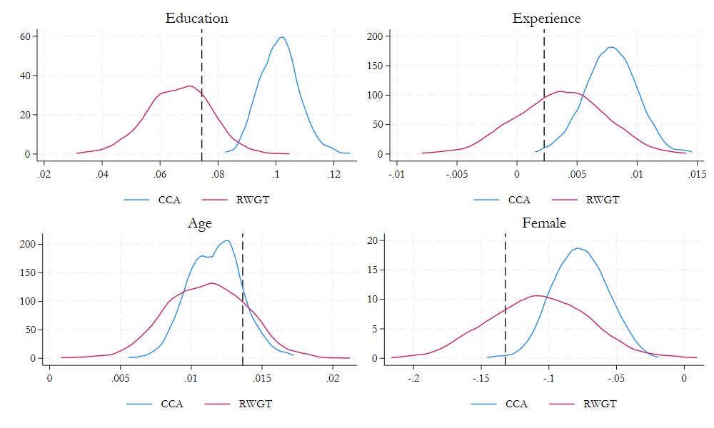
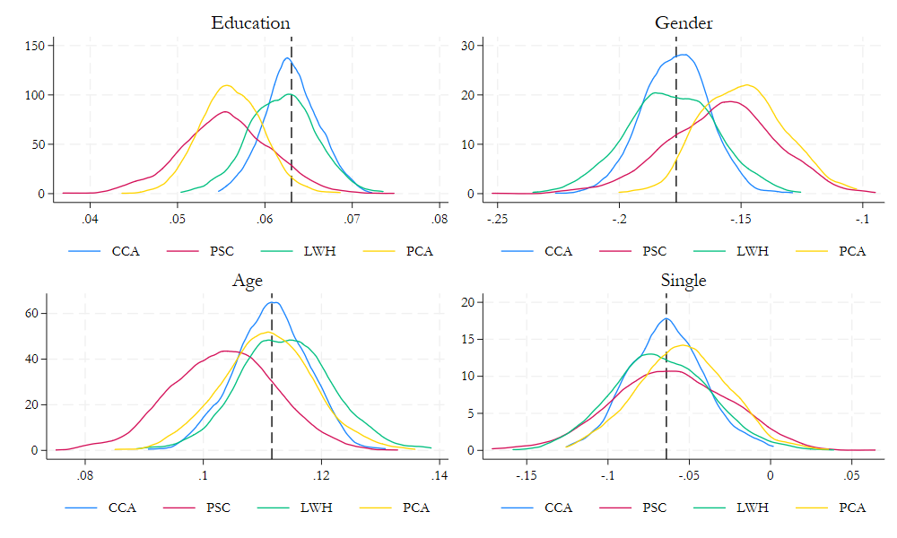

Research Methods II
Significance and Missing Data
Statistical Significance
Statistical Significance
- What is statistical significance?
- Statistical significance is a way of determining if an observed effect is due to chance.
- We typically use statistical significance to determine if the results of a study are meaningful, using various criteria.
- Is the p-value less than 0.05?
- Does the 95% confidence interval include zero?
- is the t-statistic greater than 1.96?
- But what exactly does that tell us?

Back to the basics
- Assume you are testing for the effectiveness of a medicine that treats the common cold.
- How do you know if the treatment is effective? (i.e., Does reduce the duration of the cold?)
- We make an hypothesis!
- The null hypothesis is that there is no effect of the treatment. (H0: no effect)
- You collect some data and find out that it reduces the duration of the cold by 1 days.
- Is this a significant effect?
Depends…
- The sample size (how many people were in the study?)
- If the sample size is 10,000, then a 1 day reduction in the duration of the cold may be significant.
- But if the sample size is 10, then a 1 day reduction may be due to chance.
- The effect size
- If the effect size is 0.1 days, may not be significant.
- If the effect size is 10 days, may be significant.
Then what?
Statistical significance is a way of determining if the observed effect is due to chance.
To do this, we required assumptions about the distribution under the Null Hypothesis.
- Assume that the data is normally distributed.
- And that there is a 4% chance you observe a value as extreme as the one you observed
- In that case you would say, the effect is significant.
Just couple of caveats:
- Signicance can be achieved by either measuring a “large” effect
- or by measuring a “small” effect with a large sample size. (very precisely)
Thus, finding no significance could mean the effect is noise or that the sample size is too small.
Recall Hypothesis can be true or not. We only know if the data is consistent with the hypothesis or not.
From Significance to Power
The power of a statistical test represents the probability of detecting an effect, given that the effect is real.
For example, say a drug has the effect of reducing the duration of the common cold by 1 day. But you do not know this
Instead you make your hypothesis. How likely is that the effect is significant?
- You find the effect is not significant at 10% level.
What is happening?
- The effect was true, yet we find no significance.
- The power of the test was low. (sample size was too small)
In General, Setting high significance levels will reduce the power of the test.
Multiple Hypothesis Testing
If At First You Don’t Succeed, Try, Try Again
Cartoon from xkcd, by Randall MunroeMultiple Hypothesis Testing
- In the previous example, the “SAME” hypothesis was tested multiple times.
- Yet, it was still compared to the same significance level. Is this correct?
Consider the following:
- You collect 100 data points, from a normal distribution, with mean 0 and standard deviation 1.
- You know there is only a 5% chance that the mean is greater (abs) than 0.196 (95% confidence interval)
So you run the same experiment 100 times - How many times do you expect to find a mean greater than 0.196? - What are the chances of finding a mean greater than 0.196 at least once?
- A1: 5% of the time
- A2:
- Pr of finding any “significant” effect in one experiment: \(1 - 0.95 = 0.05\)
- Pr of finding any “significant” effect in two experiments: \(1-0.95^2 = 0.0975\)
- Pr of finding no effect in 100 experiments: \(1-0.95^{100} = 0.99408\)
So if you run the experiment enough times, you are almost certain to find a “significant” effect.
- Also, While a single experiment has a 5% chance of finding a “significant” effect (alpha = 0.05), the “alpha” for 2 experiments is 0.0975!
Controlling for Multiple Hypothesis Testing
There are various ways to control for multiple hypothesis testing.
SIDAK = \(\alpha_{adj} = (1-\alpha_{tg})^{1/n}\)
BONFERRONI = \(\alpha_{adj} = \alpha_{tg}/n\)
HOLM = \(\alpha_{adj,i} = \alpha_{tg}/(n-i+1)\)
Where \(\alpha_{tg}\) is the target \(\alpha\) level (e.g., 0.05), and \(n\) is the number of tests, and \(\alpha_{i,adj}\) is the adjusted \(\alpha\) level.
There is also Uniform Confidence Intervals (see here)
- There is a caveat. They are designed to control for Type I errors (False positives), but they increase the chances of Type II errors. (Less power)
Missing/incomplete Data
Missing Data
- Missing data is a common problem in empirical research.
- Due to various reasons, some observations may be missing.
- Refusal to answer a question
- Data entry errors/ommissions
- Data loss
- etc.
- This can be a problem for various reasons:
- Missing data can produced biased and inconsistent estimates.
- It may also reduce sample size, and thus power. (Potentially making estimation unfeasible)
- So what can we do?
Types of Missing Data
- Missing Completely at Random (MCAR)
- The probability of missing data does not depend on any observed or unobserved data.
- This is the best case scenario. (this is like sampling)
- Missing at Random (MAR)
- The probability of missing data depends on observed data.
- Second Best: Its possible to address the problem using various methods.
- Missing Not at Random (MNAR)
- The probability of missing data depends on unobserved data.
- Worst case scenario: It is usually very difficult to address
What its done, and what can be done
- Complete Case Analysis (CCA)
- Drop observations with missing data.
- This is the default in most statistical software.
- This is a bad idea, unless the data is MCAR.
- Imputation
- Replace missing values with a value.
- This is a better idea, but it depends on the type of missing data.
- Requires modeling the missing data mechanism, and outcome model.
- Reweighting
- Weight observations to account for missing data.
- Requires modeling the missing data mechanism
Reweighting
Consider the following example: \[\begin{aligned} \text{Pop}&: y = x\beta+ \epsilon \\ \text{Miss Mech }&: p(nmiss|x) = F(x\gamma) \\ \text{Miss Reg }&: m\times y = m\times x \beta + m\times \epsilon \end{aligned} \]
Where \(m\) is an indicator of missingness, and \(F\) is the function of missing.
Define the Weights as \(w = \frac{1}{1-p(nmiss|x)}\)
Then, we could use WLS to estimate the model of interest:
\[w \times m\times y = w \times m\times x \beta + w \times m\times \epsilon\]
Example
frause oaxaca, clear
drop if lnwage ==.
** Modeling Missing
reg lnwage c.(educ exper tenure female age)## c.(educ exper tenure female age)
predict lxb
qui:sum lxb
replace lxb = normal((lxb -r(mean))/r(sd))
gen lnwage2 = lnwage if lxb <runiform()
gen dwage = lnwage2!=.
** Modeling Missing data
logit dwage educ exper tenure female age
predict prw, pr
gen wgt = 1/prw
** Estimating the model
reg lnwage educ exper tenure female age
reg lnwage2 educ exper tenure female age
reg lnwage2 educ exper tenure female age [w=wgt]
** Repeat the process 1000 times
Imputation: Mean and Predictive Mean
- The second approach is to impute the missing values. AKA Substitute the unobserved values with some prediction we can construct.
Consider the case of a single variable \(Z\) with missing values, and assume we have a model for \(Z\):
\[Z = X\beta + \epsilon \]
- We could “predict” missing values using the mean of the observed values:
\[\hat{Z} = \bar{Z} = \frac{1}{n}\sum_{i=1}^n Z_i\]
- Or we could use the predicted values from the model:
\[\hat{Z} = X\hat{\beta}\]
Neither is a good idea, even under MCAR. (Why?)
- We are getting rid of ALL uncertainty (variance) in the missing values.
Better Approach: Stochastic Imputation
A better approach of imputation is to use a model to predict not only the “known” variation (Conditional mean), but also the “unknown” variation (Conditional variance).
So, we can use the model to predict the missing values, but we add some noise to the prediction.
\[\tilde z = X\hat{\beta} + \hat \epsilon\]
- Where \(\hat \epsilon\) is a “random” residual obtain based on the model assumptions.
- \(\tilde z\) is a stochastic imputation of \(z\).
Even Better: Account for the uncertainty in the model
- We can also account for the uncertainty in the model by considering the uncertainty in the model parameters, and the error:
\[z = X\beta + \epsilon \]
- Under normality assumptions, we could estimate the model using MLE, and obtain the variance covariance matrix of the parameters.
\[ \begin{pmatrix} \hat{\beta} \\ \hat{\sigma}^2 \end{pmatrix} \sim N\left(\begin{bmatrix} \beta \\ \sigma \end{bmatrix}, \begin{bmatrix} V_{\beta} & 0 \\ 0 & V_{\sigma} \end{bmatrix}\right) \]
- So, we can get \(\tilde \beta\) and \(\tilde \sigma\), from random draws from the distribution above, and then use them to impute the missing values.
Even Better than before: Multiple Imputation
The previous methods assumed you only need one imputation to solve the Imputation problem.
One, however, may not be enough to account for the uncertainty in the imputation process.
So, we can repeat the imputation process multiple times, and obtain multiple imputed values for each missing data.
With multiple imputed values, we can estimate the model of interest multiple times, and then combine the results using Rubin’s rules.
- Call M the number of imputations, and \(m\) the imputation index.
\[\beta_{MI} = \frac{1}{M}\sum_{m=1}^M \beta_m\]
\[V_{MI} = \frac{1}{M}\sum_{m=1}^M V_m + \left(\frac{M+1}{M}\right)Var(\beta_m)\]
- Where \(V_m\) is the VCV matrix of the parameters for each imputation, and \(Var(\beta_m)\) is the variance of the parameters across imputations.
\[df = (M-1) \left( 1 + \frac{M}{M+1}\frac{Var_m}{Var_B}\right)^2\]
Example: Stata
frause oaxaca, clear
drop if lnwage ==.
** Modeling Missing
foreach i in educ exper tenure age {
gen m_`i' = `i' if runiform()>.25
}(Excerpt from the Swiss Labor Market Survey 1998)
(213 observations deleted)
(362 missing values generated)
(311 missing values generated)
(387 missing values generated)
(348 missing values generated)Setting data for -mi- commands
Conditional models:
m_exper: regress m_exper m_age m_educ m_tenure lnwage single
female
m_age: regress m_age m_exper m_educ m_tenure lnwage single
female
m_educ: regress m_educ m_exper m_age m_tenure lnwage single
female
m_tenure: regress m_tenure m_exper m_age m_educ lnwage single
female
Performing chained iterations ...
Multivariate imputation Imputations = 10
Chained equations added = 10
Imputed: m=1 through m=10 updated = 0
Initialization: monotone Iterations = 100
burn-in = 10
m_educ: linear regression
m_exper: linear regression
m_tenure: linear regression
m_age: linear regression
------------------------------------------------------------------
| Observations per m
|----------------------------------------------
Variable | Complete Incomplete Imputed | Total
-------------------+-----------------------------------+----------
m_educ | 1072 362 362 | 1434
m_exper | 1123 311 311 | 1434
m_tenure | 1047 387 387 | 1434
m_age | 1086 348 348 | 1434
------------------------------------------------------------------
(Complete + Incomplete = Total; Imputed is the minimum across m
of the number of filled-in observations.)Estmating the model(s):
mi estimate, post: regress lnwage m_* single female
est sto m1
regress lnwage educ exper tenure age single female
Multiple-imputation estimates Imputations = 10
Linear regression Number of obs = 1,434
Average RVI = 0.3607
Largest FMI = 0.5511
Complete DF = 1427
DF adjustment: Small sample DF: min = 31.27
avg = 293.52
max = 1,277.02
Model F test: Equal FMI F( 6, 403.1) = 63.74
Within VCE type: OLS Prob > F = 0.0000
------------------------------------------------------------------------------
lnwage | Coefficient Std. err. t P>|t| [95% conf. interval]
-------------+----------------------------------------------------------------
m_educ | .0780927 .0062465 12.50 0.000 .0656678 .0905176
m_exper | .0034867 .002416 1.44 0.154 -.0013503 .0083237
m_tenure | .0023203 .002857 0.81 0.423 -.0035046 .0081451
m_age | .0099868 .0023905 4.18 0.000 .0052212 .0147524
single | -.09733 .0309067 -3.15 0.002 -.1580571 -.036603
female | -.1226849 .0255255 -4.81 0.000 -.1727613 -.0726084
_cons | 2.102173 .1059333 19.84 0.000 1.889132 2.315213
------------------------------------------------------------------------------
Source | SS df MS Number of obs = 1,434
-------------+---------------------------------- F(6, 1427) = 86.35
Model | 107.645555 6 17.9409258 Prob > F = 0.0000
Residual | 296.474249 1,427 .207760511 R-squared = 0.2664
-------------+---------------------------------- Adj R-squared = 0.2633
Total | 404.119804 1,433 .282009633 Root MSE = .45581
------------------------------------------------------------------------------
lnwage | Coefficient Std. err. t P>|t| [95% conf. interval]
-------------+----------------------------------------------------------------
educ | .0753085 .005253 14.34 0.000 .0650041 .0856129
exper | .0026545 .0018941 1.40 0.161 -.001061 .0063701
tenure | .0022932 .0019725 1.16 0.245 -.0015761 .0061625
age | .0111437 .0019397 5.75 0.000 .0073388 .0149486
single | -.0918932 .0292993 -3.14 0.002 -.1493674 -.0344189
female | -.1289592 .0253754 -5.08 0.000 -.1787363 -.0791822
_cons | 2.100201 .0816356 25.73 0.000 1.940063 2.26034
------------------------------------------------------------------------------What about LDV models?
The method sketched above (OLS) can also be extended to other models
Consider Logit models
S1: Estimate Logit model: \(P(y=1|X) = F(X\beta)\)
S2: Draw \(\beta\) from the distribution, call it \(\tilde\beta\)
S3: Draw \(y\) from a Bernoulli distribution: \(y \sim Bernoulli(F(X\tilde\beta))\)
- Similar procedures can be done for other models.
Other Methods: HotDecking
- Hotdecking is a method of imputation that uses the observed values of the data to impute the missing values.
- Because it uses data from the empirical distribution (observed data), it produces “valid” imputations for any kind of data.
- The idea is to find a pool of potential “donors” for the one with missing data. (similar observations)
- Then select one candidate and use its data to impute the missing values.
Definition of a “donor”
Donors are identified as observations with similar characteristics to the one with missing data. (close to the missing observation)
Finding potential donors is easy when there is low dimensional data, but it becomes more difficult as the number of variables increases.
Example
Imputing data for wages in oaxaca.
frause oaxaca, clear
** ID pool of donors based on age and gender
egen id_pool = group(age female)
** Now, for each missing observation select a "random" donor
gen misswage =missing(lnwage)
bysort id_pool (misswage):egen smp = sum(misswage==0)
bysort id_pool: gen draw = runiformint(1, smp)
bysort id_pool: replace lnwage = lnwage[draw] if misswage==1
sum lnwage if misswage==0
sum lnwage if misswage==1
sum lnwage (Excerpt from the Swiss Labor Market Survey 1998)
(213 real changes made)
Variable | Obs Mean Std. dev. Min Max
-------------+---------------------------------------------------------
lnwage | 1,434 3.357604 .5310458 .507681 5.259097
Variable | Obs Mean Std. dev. Min Max
-------------+---------------------------------------------------------
lnwage | 213 3.342183 .5482005 .507681 5.259097
Variable | Obs Mean Std. dev. Min Max
-------------+---------------------------------------------------------
lnwage | 1,647 3.35561 .5331507 .507681 5.259097With many variables, we often estimating some distance measure and/or data reduction to ID “close” observations:
- Propensity Score (based on logit/probit/regress).
\[D(X,X_0) = abs(G(X) - G(X_0))\]
- Mahalanobis distance (based on X covariance matrix)
\[D(X,X_0) = \sqrt{(X-X_0)'\Sigma^{-1}(X-X_0)}\]
- Affinity score: based on some linear combination of variables.
\[D(X,X_0) = \frac{1}{K}\sum_{i=1}^K \alpha_i f\left(\frac{X_i - X_{0i}}{h}\right)\]
Once distances are estimated, donor pools can be defined based on the distance measure.
- Say, all observations with distance less than 0.1.
And the donor can be selected randomly from the pool. (or weighted by distance)
This approaches could be vary computationally intensive, because it requires estimating \(N\times N\) distances.
Complexity may be reduced by using data reduction techniques, such as PCA, FA or propensity scores
Example: Stata
Using single Score (Data reduction)
frause oaxaca, clear
drop if lnwage ==.
// 25% of data is missing
gen mlnwage = lnwage if runiform()>.25
gen misswage =missing(mlnwage)
qui:logit misswage educ age agesq female single married
predict psc, xb
qui:reg mlnwage educ age agesq female single married
predict lnwh, xb
qui:pca educ age agesq female single married
qui:predict pc1, score(Excerpt from the Swiss Labor Market Survey 1998)
(213 observations deleted)
(351 missing values generated)For imputation, lets do something simple, Use data from the closet observation (with lower score) as donor.
foreach i in psc lnwh pc1 {
drop2 lnwage_`i'
gen lnwage_`i' = mlnwage
sort `i'
replace lnwage_`i'=lnwage_`i'[_n-1] if lnwage_`i'==. & lnwage_`i'[_n-1]!=.
*replace lnwage_`i'=lnwage_`i'[_n+1] if lnwage_`i'==. & lnwage_`i'[_n+1]!=.
qui:_regress lnwage_`i' educ age agesq female single married
matrix b`i' = e(b)
matrix coleq b`i'=`i'
}variable lnwage_psc not found
(351 missing values generated)
(351 real changes made)
variable lnwage_lnwh not found
(351 missing values generated)
(351 real changes made)
variable lnwage_pc1 not found
(351 missing values generated)
(351 real changes made)Estimate models 1000 times, and lets see results
Comparison of methods
Till next time!
What happens when not some but ALL data is missing?